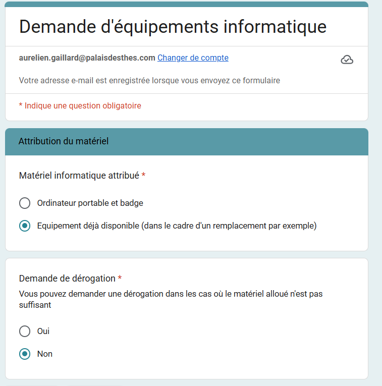
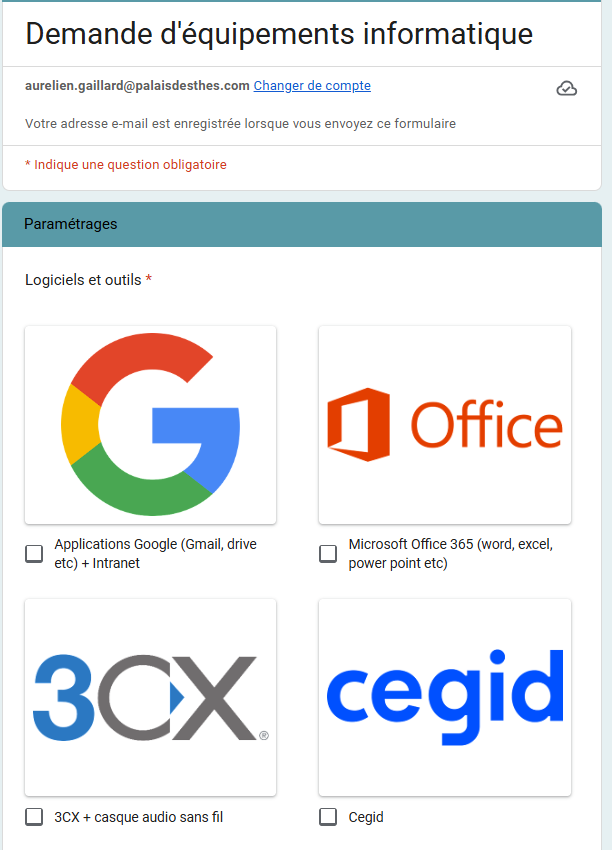
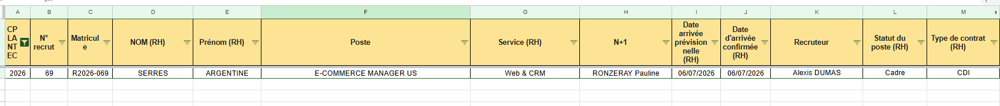
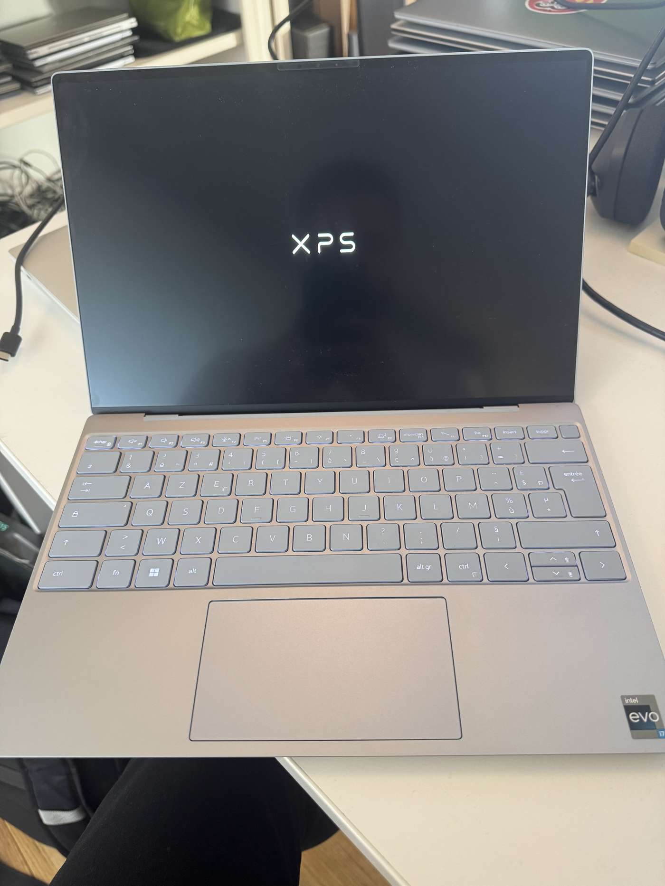
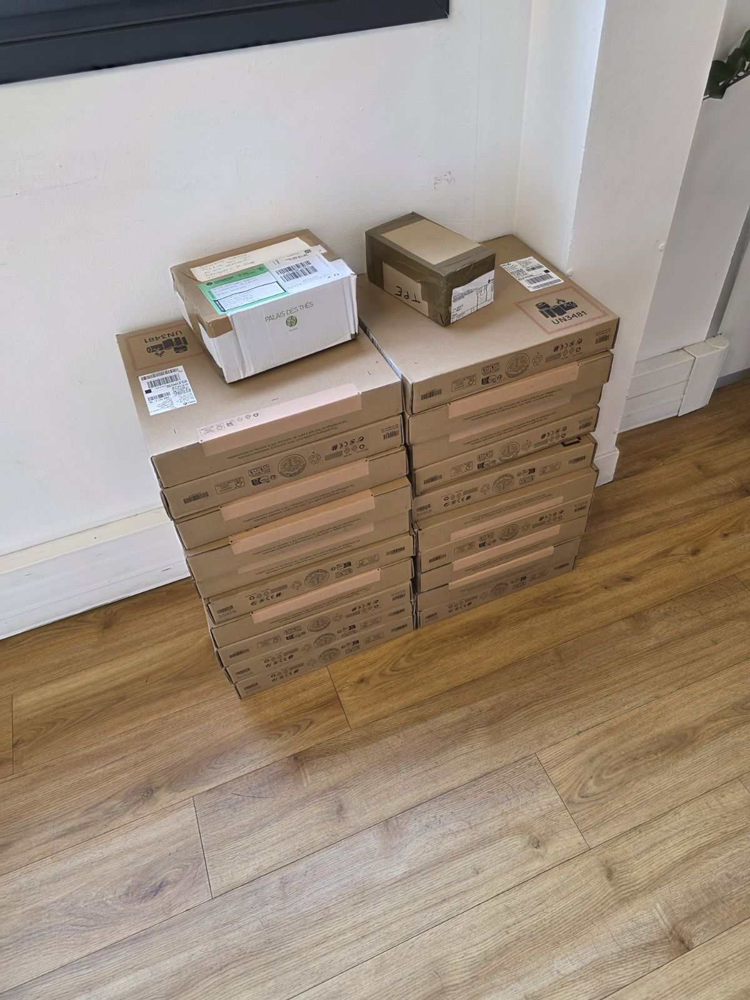

L'intégration d'un nouveau collaborateur au sein du Palais des Thés est une étape clé qui repose sur une coordination étroite entre le management et le service informatique. Afin de garantir l'opérationnalité du nouvel arrivant dès son premier jour, un workflow structuré a été mis en place, couvrant l'expression des besoins jusqu'à la remise du Pack IT complet.
Objectif : Supprimer toute friction technique lors de l'arrivée du collaborateur pour valoriser l'image de l'entreprise et permettre une prise de poste immédiate et sereine.





À l'issue de la préparation, le technicien constitue un Pack de bienvenue complet, remis dès le premier jour de prise de poste.